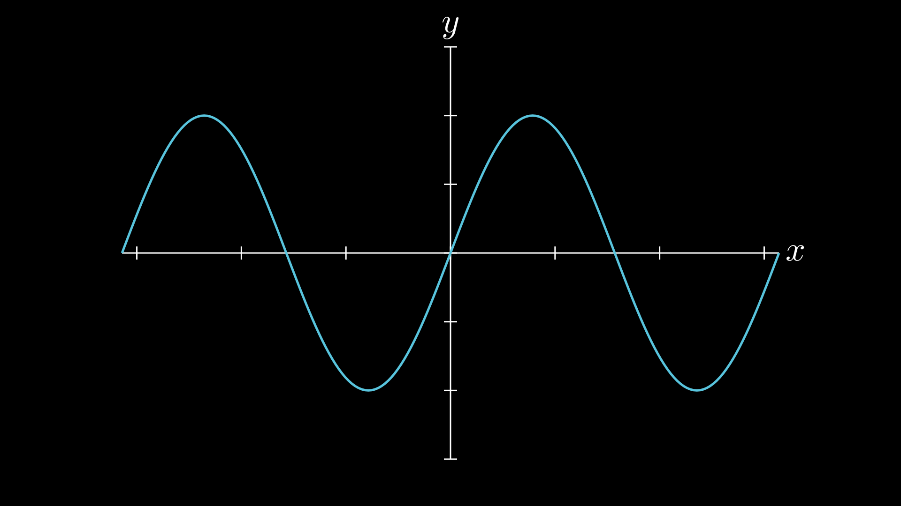

Graphing¶
VectorMation provides two ways to plot mathematical functions: Graph (full axes, ticks, labels) and FunctionGraph (bare curve only).
Graph¶
Basic Usage¶
Example: Basic sin graph

v = VectorMathAnim('_ref_out', verbose=args.verbose)
v.set_background()
graph = Graph(math.sin, x_range=(-2 * math.pi, 2 * math.pi),
y_range=(-1.5, 1.5))
v.add(graph)
if args.for_docs:
v.write_frame(filename='docs/source/_static/videos/graph_basic.svg')
if not args.for_docs:
Constructor¶
Graph(func, x_range=(-5, 5), y_range=None, num_points=200,
x=100, y=50, plot_width=800, plot_height=600,
x_label='x', y_label='y', show_grid=False,
creation=0, z=0, **styling_kwargs)
Parameter |
Description |
|---|---|
|
A callable |
|
|
|
|
|
Number of sample points for the curve |
|
Top-left position of the plot area in SVG pixels |
|
Size of the plot area in SVG pixels |
|
Axis labels (set to |
|
Show grid lines at tick positions |
|
Passed to the curve (e.g. |
The default curve colour is #58C4DD (light blue) with stroke_width=3.
Auto Y-Range¶
If y_range is not specified, the graph samples the function across the x-range and automatically determines appropriate y-axis bounds with 5% padding.
Adding More Functions¶
cos_curve = graph.add_function(math.cos, stroke='#FC6255')
add_function() returns a Path object, which you can animate independently:
cos_curve.create(start=2, end=4)
Animating the Curve¶
The graph’s curve is a Path accessible as graph.curve. You can animate it:
graph.curve.create(start=0, end=2) # animate drawing
graph.curve.fadein(start=0, end=1) # fade in
Sub-Objects¶
Attribute |
Type |
Description |
|---|---|---|
|
|
The main function curve |
|
|
Animated x-axis range bounds |
|
|
Animated y-axis range bounds |
Coordinate Mapping¶
The graph provides methods for mapping between math and SVG coordinates:
Math x/y values are mapped linearly to the SVG plot area
The y-axis is inverted (SVG y increases downward)
The axes are positioned at the math origin (0, 0) when it falls within the range
coords_to_point(x, y, time=0)converts math coordinates to SVG pixels
Animated Ranges¶
The axis ranges (x_min, x_max, y_min, y_max) are Real attributes, so they can be
animated like any other property. Use the convenience methods to animate both ends at once:
ax.set_x_range(0, 2, (1, 4)) # animate x-axis bounds
ax.set_y_range(0, 2, (0, 18)) # animate y-axis bounds
ax.set_ranges((1, 4), (0, 18), start=0, end=2) # animate both at once
You can also animate individual bounds directly:
ax.x_max.move_to(0, 2, 20) # only change the upper x bound
Example: Animated axis zoom
Axis decorations (lines, ticks, tick labels, grid) automatically re-render each frame to match the current range. Curves resample the function at each frame too, so everything stays in sync.
v = VectorMathAnim('_ref_out', verbose=args.verbose)
v.set_background()
ax = Axes(x_range=(-5, 5), y_range=(-2, 26))
curve = ax.plot(lambda x: x ** 2, stroke='#58C4DD')
# Zoom into x=[1, 4], y=[0, 18]
ax.set_ranges((1, 4), (0, 18), start=0, end=2)
v.add(ax)
if args.for_docs:
v.export_video('docs/source/_static/videos/graph_zoom.mp4', fps=30, end=3)
if not args.for_docs:
Example: Animated Graph¶
Example: Animated sin + cos
Draw a sin curve, then add and animate a cos curve on the same axes.
v = VectorMathAnim('_ref_out', verbose=args.verbose)
v.set_background()
graph = Graph(math.sin, x_range=(-2 * math.pi, 2 * math.pi),
y_range=(-1.5, 1.5))
# Draw sin curve
graph.curve.create(start=0, end=2)
# Add and draw cos curve
cos_curve = graph.add_function(math.cos, stroke='#FC6255')
cos_curve.create(start=2.5, end=4.5)
v.add(graph)
if args.for_docs:
v.export_video('docs/source/_static/videos/graph_animated_ref.mp4', fps=30, end=5)
if not args.for_docs:
FunctionGraph¶
FunctionGraph plots a function as a bare polyline – no axes, ticks, or labels. Useful when you only need the curve itself, or want to compose it with other objects.
Constructor¶
FunctionGraph(func, x_range=(-5, 5), y_range=None, num_points=200,
x=100, y=50, width=800, height=600,
creation=0, z=0, **styling_kwargs)
Parameter |
Description |
|---|---|
|
A callable |
|
|
|
|
|
Number of sample points |
|
Top-left position of the plot area in SVG pixels |
|
Size of the plot area in SVG pixels |
|
Passed to the polyline (e.g. |
The default curve style is stroke='#58C4DD', stroke_width=3, fill_opacity=0.
Example¶
Example: FunctionGraph with draw_along
FunctionGraph extends Lines, so all VObject animation methods (fadein, write, shift, etc.) work directly on it.
v = VectorMathAnim('_ref_out', verbose=args.verbose)
v.set_background()
curve = FunctionGraph(math.sin, x_range=(0, 2 * math.pi),
width=600, height=300, x=200, y=350)
curve.draw_along(start=0, end=2)
v.add(curve)
if args.for_docs:
v.export_video('docs/source/_static/videos/graph_functiongraph.mp4', fps=30, end=3)
if not args.for_docs: